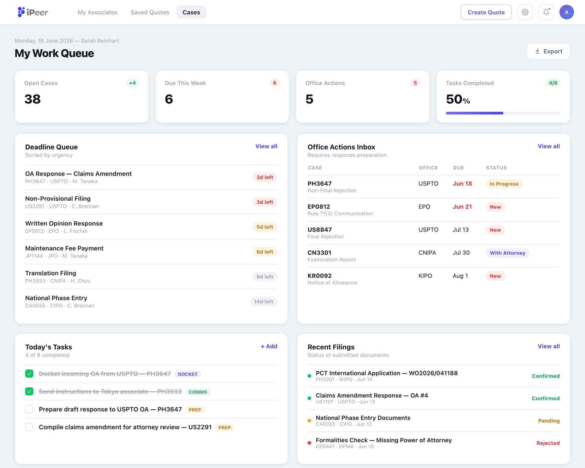
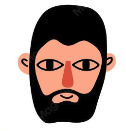

How we built a single, holistic
view of a global partner network
go straight tolive prototype
Context
Managing a Global Network of Local Firms
iPeer's dashboard is where paralegals track that network daily - deadlines, cases, and coverage worldwide.
The Problem
The People Who Ran the Firm Never Got Value From It.
Paralegals opened this dashboard daily - deadlines, case counts, regional coverage, all tracked. But when a partner needed to decide which firm to hand the next case to, none of it answered the question. Quality, responsiveness, cost - the things that actually drove the decision - still lived in email threads and gut memory.

The only user
The paralegalDeadlines, tasks, office actions, and filings - no strategy, no metrics, just the work to get through.

The new user
The partnerThe current dashboard doesn't give him value - and isn't relevant to his needs or interests.
Research
So we asked the partners themselves
We did 10 interviews and sent 30 surveys to partners across the world to find out what is missing in their current systems. The pain points kept repeating - no visibility into which associates were active, no sense of reciprocity across the network, and no read on quality or turnaround before staffing a case.
Share of partners who named this as a top priority in early interviews
Design Decisions
From Data to a Decision
1. Trends first, numbers on demand
Overview charts show the shape of the trend by default - hover reveals the exact figures behind it.
Reciprocity (whether you're sending back as many cases as you receive) works the same way - click on the matrix to see more information.
2. The map is the drill-down
Clicking region → country → associate is the navigation - no separate menu or list.
3. Coverage at a glance
Regions are shaded by associate density, so gaps and strongholds show before you click.
4. AI turns data into a to-do list
One click swaps the map for a generated summary - flagged relationships, reciprocity you owe, lowest-rated associates - each item click-through to fix it.
Final Design
The Impact
Measuring the New Dashboard
Validated over 6 weeks of usability testing with managing partners.